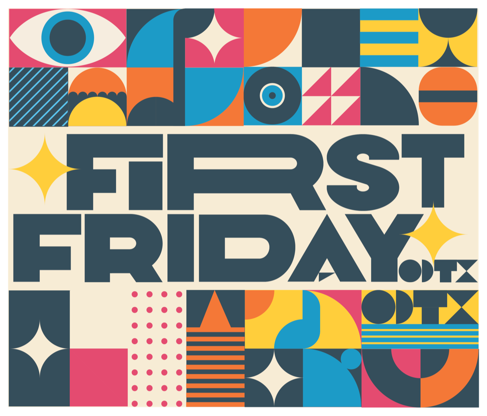

Used with



Midland city officials declared a day in Mr. Curtis's honor, inspired in part by this film.
The Blessed Corner — A short documentary film
"God has a purpose for me being on this corner." The Blessed Corner is a 2-minute film about purpose without a title, service without recognition, and the kind of leadership most organizations spend thousands of dollars trying to teach.
Used with

Midland city officials declared a day in Mr. Curtis's honor, inspired in part by this film.
Every license includes a complete facilitation package — a facilitator guide, participant discussion sheet, session flow template, a 15-question discussion bank, and a one-page film brief you can forward to your supervisor to justify the purchase.
It works for a first-time facilitator who has never led a discussion. It works the second and third time you use it without feeling stale. And it connects to frameworks your organization already uses — servant leadership, SEL competencies, emotional intelligence.
Most organizations spend thousands of dollars trying to teach what Mr. Curtis lives every single day. The entry license starts at $495.
"God has a purpose for me being on this corner." — Mr. Curtis
Used with Midland ISD students, screened at the Ector Theater, and covered by First Alert 7 News. The story was already spreading before it became a licensable resource.
School districts & campuses
You need something that sparks real conversation in advisory, character ed, or SEL — not another worksheet your students forget by lunch.
Leadership & HR teams
You're running onboarding or a retreat and you need a moment that actually lands — not a slide deck about core values that everyone has seen before.
Nonprofits, churches & civic orgs
You're trying to put words to servant leadership for volunteers and staff — and you want something that shows it rather than just says it.
Economic development & chambers
You want a story that represents this region with pride — something that says who the Permian Basin actually is, not just what it produces.
If your role involves getting people to show up differently — this is built for that moment.
Ready to bring this into your organization?
Mr. Curtis has stood on the same corner for over 20 years. The organizations that license this film get to return to that story the same way — bringing it back when a new cohort needs it, when a team needs re-grounding, when the conversation matters again. Licensing makes that possible without starting over every time.
Most organizations decide during or right after a short call. No pressure. Just a conversation.